內容系列
商業分析系列
FB、Dcard 與網站免費文章整理，從公開事件拆解公司策略、臨床數據、交易訊號與資本市場判斷。
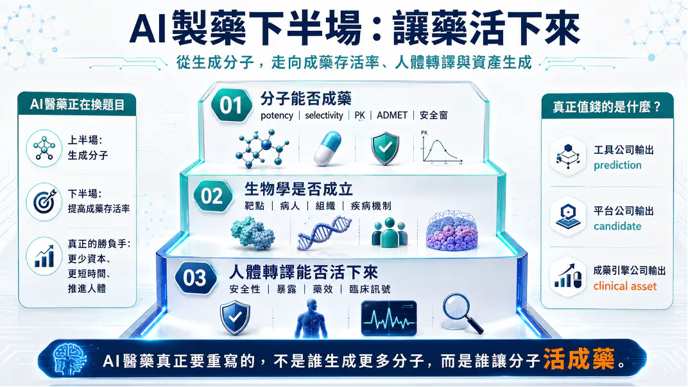
AI製藥下半場：讓藥活下來
AI 醫藥上半場比生成分子，下半場比成藥存活率。安宏真正值得被看見的，不是單純曝光，而是用 AI + PROTAC（蛋白質降解技術）、實驗閉環與人體轉譯，嘗試形成高資本效率的 clinical asset engine（臨床資產生成引擎）。

盤點整理，AI藥物開發走得如何了？
AI 製藥已從概念走向臨床驗證。這篇盤點 Zasocitinib、GB-0895、Zovegalisib、REC-4881 等代表管線，拆解不同 AI 路線如何轉化成真正的藥物資產。

減肥成王：GLP-1 正在把全球生技資本重新洗牌
GLP-1 不只是減重藥題材，而是重新配置全球藥廠研發預算、產能投資、BD 談判與生技估值規則的核心變數。
RAS 標靶打開胰臟癌新局：生華科 CX-5461 卡位下一場「抗藥性管理」戰
Daraxonrasib 打開胰臟癌 RAS 標靶時代後，真正的下一場戰爭是抗藥性管理；生華科 CX-5461 的價值在於能否成為 RAS 標靶後時代的免疫增敏與聯合治療候選策略。
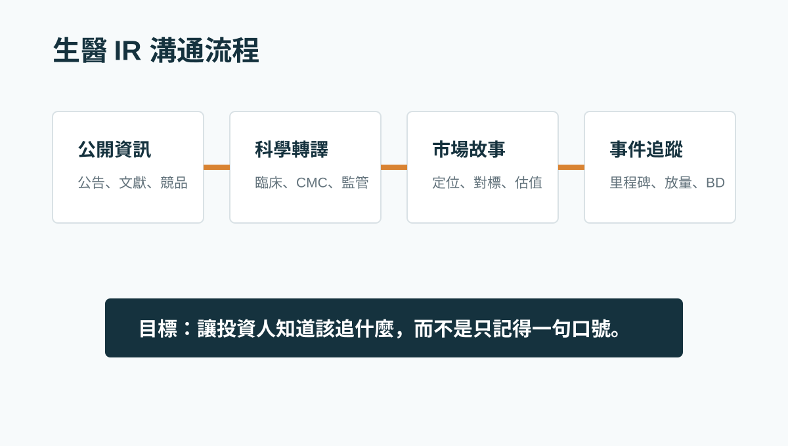
生醫公司 IR 不是把簡報變漂亮，而是把管線變成可追蹤的資本市場故事
好的 IR 內容不是宣傳話術，而是把臨床、CMC、監管、商業化與對標公司轉成投資人可以追蹤的節點。
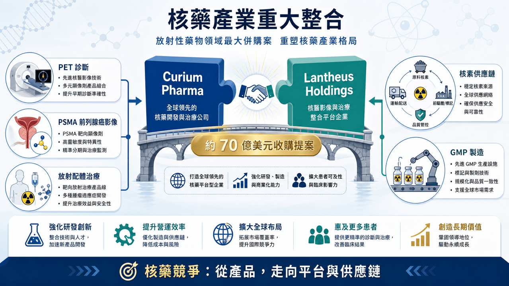
70億美元核藥併購傳聞：Curium想買Lantheus，真正買的是一張核藥時代的入場券
Curium 傳出有意以約 70 億美元收購 Lantheus。這不只是核藥併購傳聞，而是診斷、製造、配送、院端網絡與治療端能力整合的產業訊號。
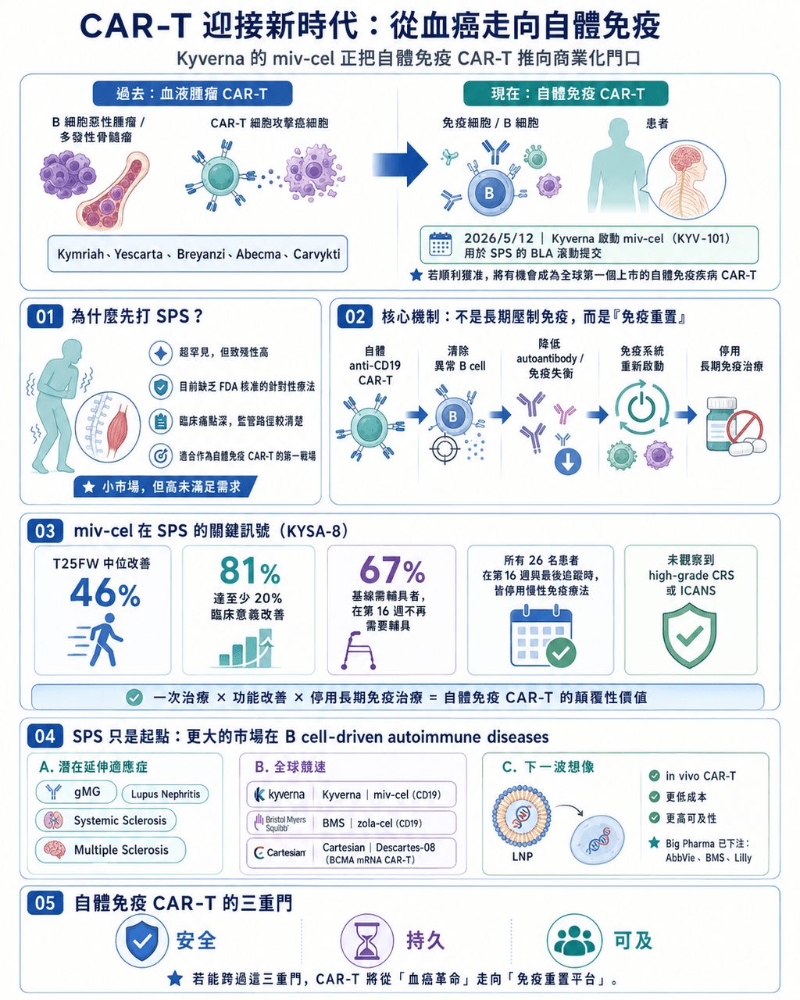
CAR-T 迎接新時代：從血癌走向自體免疫
Kyverna 啟動 mivocabtagene autoleucel 的 BLA 滾動式提交，象徵 CAR-T 從血癌治療走向自體免疫疾病的新階段，也重新打開細胞治療的商業想像。
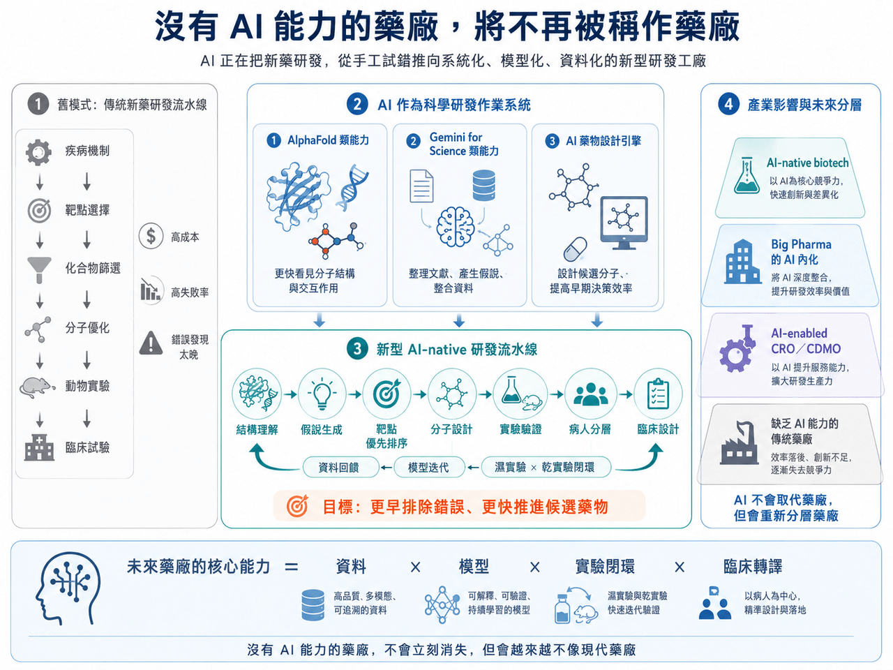
沒有 AI 能力的藥廠，將不再被稱作藥廠
AI 正在從工具變成製藥公司的底層能力。未來藥廠不只比管線，也會比資料、模型、實驗自動化與決策速度，沒有 AI 能力的公司將愈來愈難被視為現代藥廠。
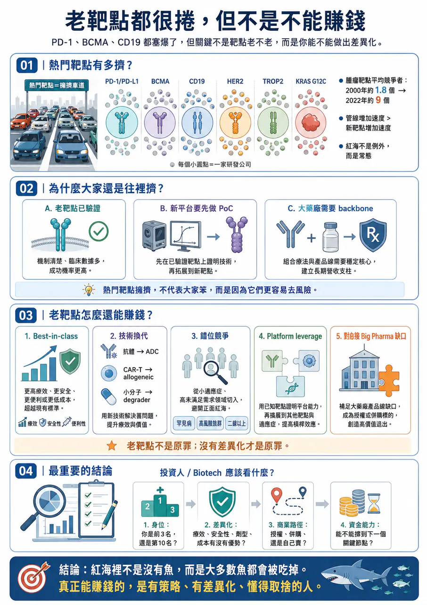
老靶點都很捲，但不是不能賺錢
熱門靶點擁擠不代表沒有價值；真正關鍵是公司能否在身位、差異化、適應症切入、技術換代與 BD 對接中找到自己的獲利位置。
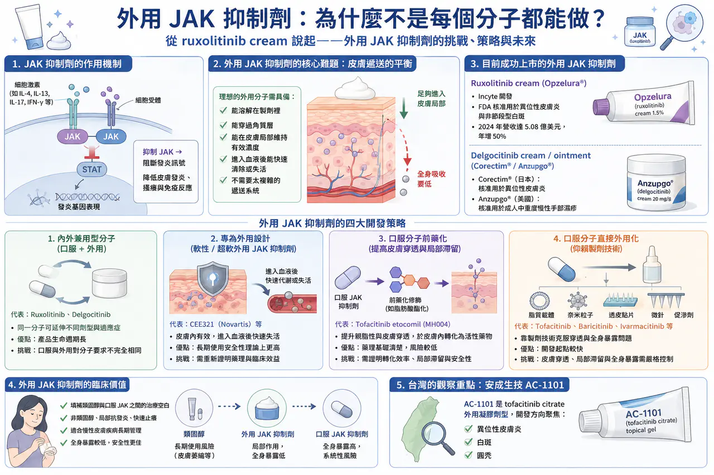
從 Ruxolitinib cream 說起：外用 JAK 抑制劑，為什麼不是每個分子都能做？
外用 JAK 抑制劑的核心不是單純抑制 JAK，而是分子能否穿過皮膚、留在局部、降低全身暴露，並在適應症與製劑設計上建立差異化。
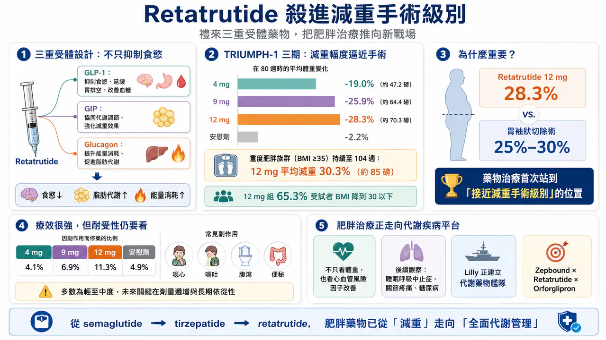
Retatrutide 殺進減重手術級別：禮來三重受體藥物，把肥胖治療推向新戰場
Eli Lilly 的 retatrutide 在三期試驗中把減重幅度推向接近手術級別，代表肥胖治療正從單一路徑抑制食慾，走向多受體代謝調控的新戰場。
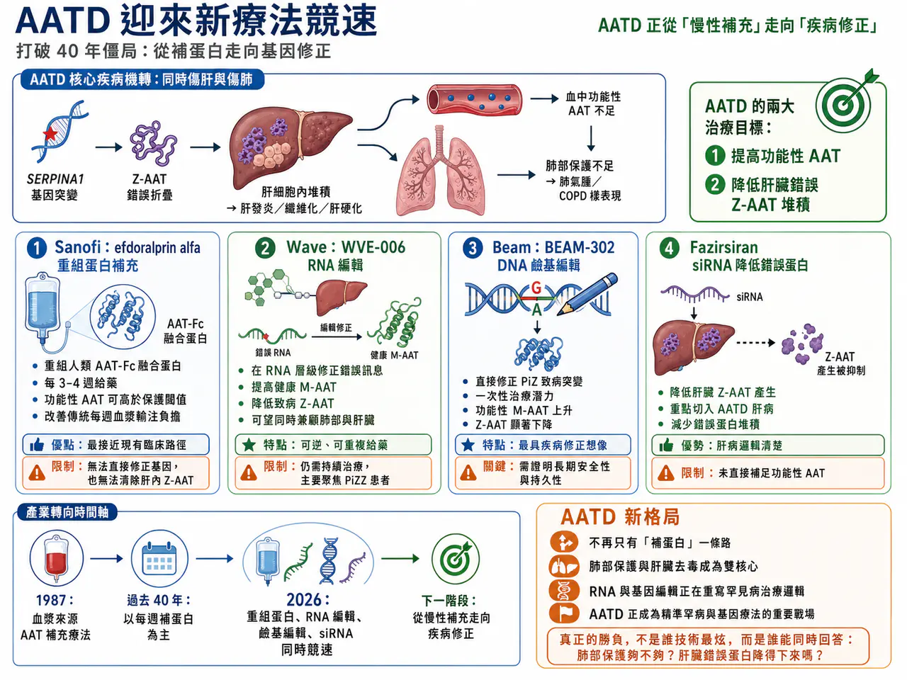
40年沒藥的遺傳病迎來重磅進展
AATD 治療在近 40 年後迎來新療法競速，Sanofi、Wave、Beam 分別以長效重組蛋白、RNA 編輯與基因鹼基編輯切入，代表罕見遺傳病治療正從補蛋白走向根源修正。
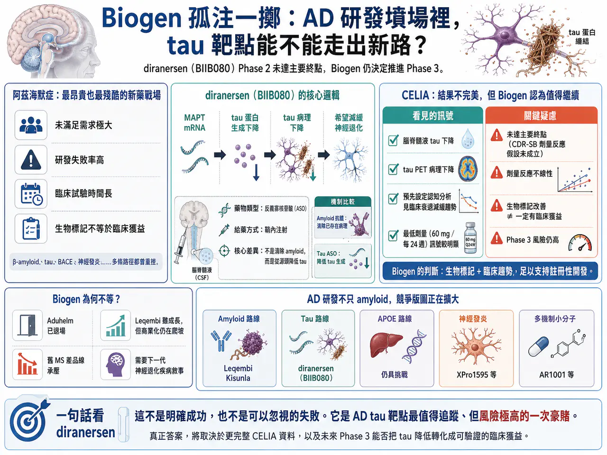
Biogen 孤注一擲：Alzheimer’s Disease 研發墳場裡，tau 靶點能不能走出新路？
Biogen 在 BIIB080 / diranersen 的 Phase 2 CELIA 研究未達主要終點後仍推進 Phase 3，反映 AD 研發裡 tau 靶點的高風險、高需求與策略性押注。
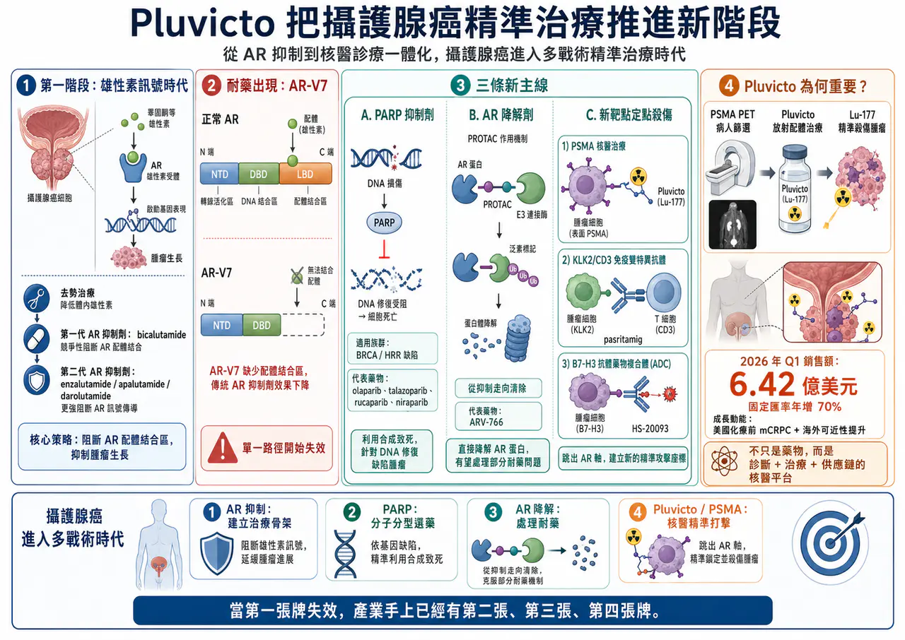
核藥賣爆了
Pluvicto 單季銷售達 6.42 億美元，顯示攝護腺癌治療正從荷爾蒙訊號攻防，走向 PSMA 核醫診療一體化與放射配體療法的新階段。
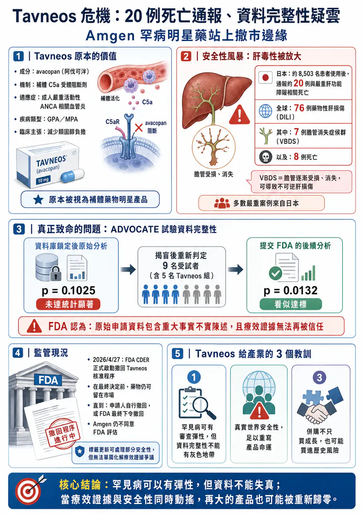
⚠️ Tavneos 危機：20 例死亡通報、資料完整性疑雲，Amgen 罕病明星藥站上撤市邊緣
Tavneos 從罕病明星藥站上撤市邊緣，真正危機不只是日本死亡通報與肝毒性，而是 FDA 對 ADVOCATE 試驗資料完整性的嚴重指控。
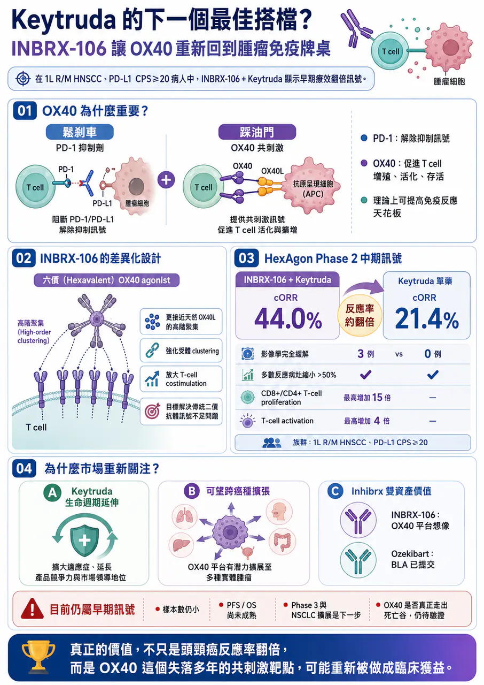
藥王的最佳搭檔？療效翻倍！
Keytruda 專利懸崖前，下一代聯合治療能否提高療效天花板與延長生命週期，是藥王商業價值的關鍵問題。
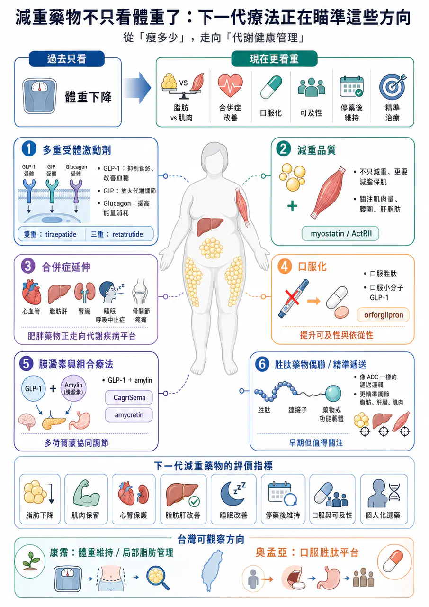
減重藥物不只看體重了：下一代療法正在瞄準這些方向
下一代減重療法不只比體重下降，也要看肌肉保留、脂肪肝、心血管與代謝共病等更完整臨床價值。
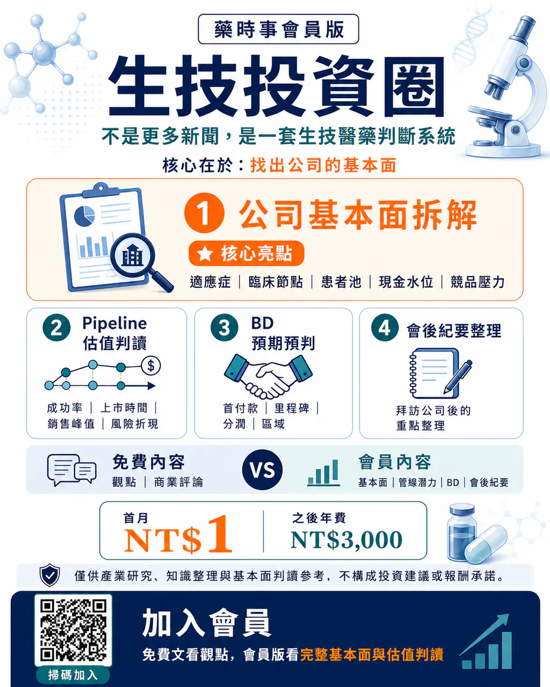
🧬 生技投資圈｜不是更多新聞，是一套生技醫藥判斷系統
生技新聞很多。但真正難的不是「知道發生了什麼」，而是看懂：🔍 這件事到底改變了公司的基本面嗎？一個臨床結果，是降低失敗風險，還是市場短線情緒？一個授權案，是有真實商業價值，還是只是在包裝題材？一家公司
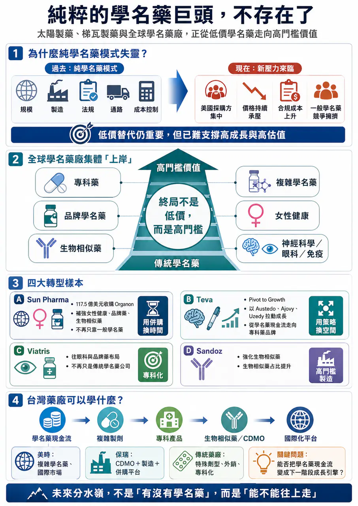
太陽製藥、梯瓦製藥 與 全球學名藥廠的轉型焦慮
全球學名藥巨頭面對價格壓力與成長瓶頸，轉型重點從傳統製造規模走向特殊學名藥、創新藥與更高門檻產品。
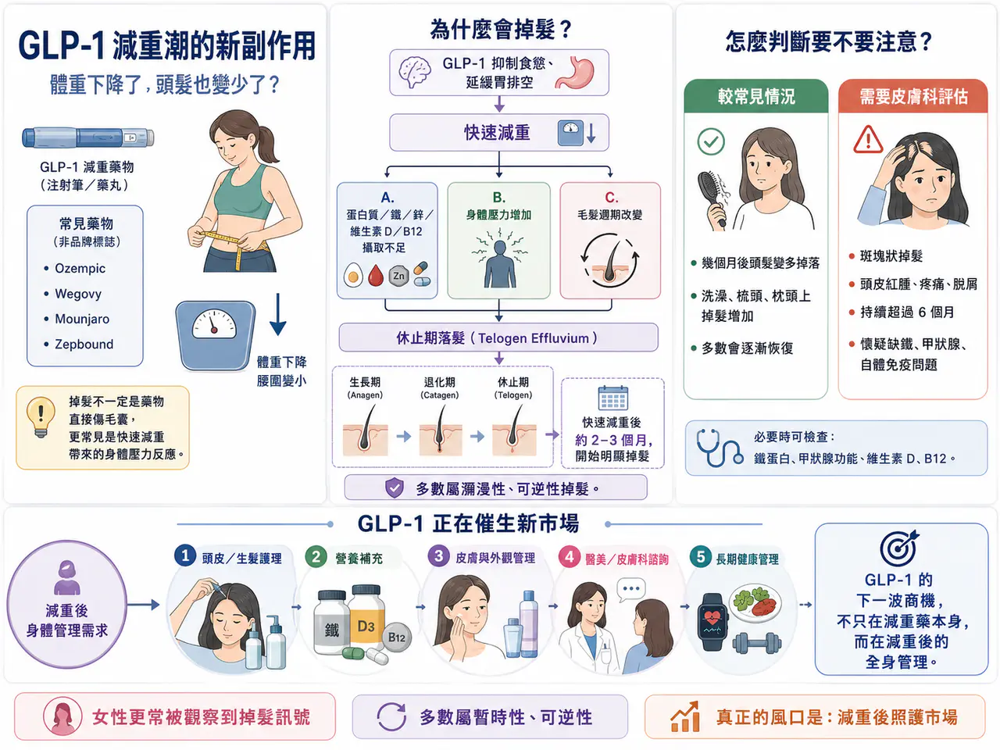
減肥藥新副作用，意外帶出新賽道？
GLP-1 減重潮帶出的掉髮與身體組成問題，正在讓頭皮護理、營養管理與皮膚科成為減重藥外溢新賽道。
氣喘新藥正在換檔：從吸入三合一到上游免疫靶點!
氣喘治療正在從吸入三合一與症狀控制，走向上游免疫靶點、生物製劑與更精準的病人分型。
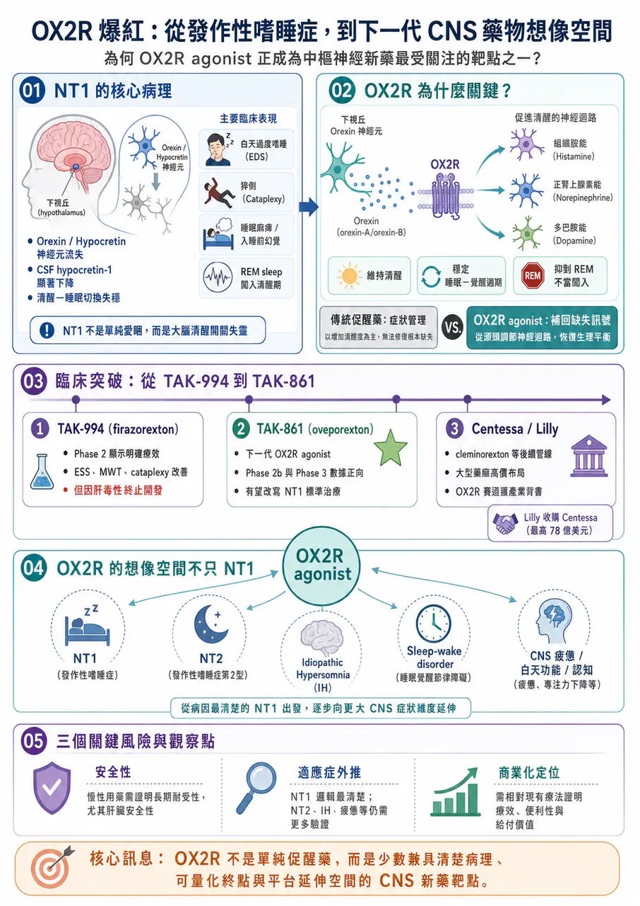
OX2R 爆紅：從發作性嗜睡症，到下一代 CNS 藥物想像空間
【 OX2R 爆紅：從發作性嗜睡症，到下一代 CNS 藥物想像空間】中樞神經系統藥物開發，很久沒有出現一個這麼清楚、這麼有生物學邏輯、又這麼接近臨床突破的靶點。這個靶點就是 Orexin Recept
全球生技大浪來襲：看懂五兆減肥藥的主升段與科學定價
當台灣資本市場的資金與目光被 AI 半導體全面虹吸時，全球生技產業正悄悄用另一種方式重新定義人類的未來——那就是減肥藥的瘋狂狂潮。我們多次提到，AI 解決的是算力與效率問題，而生技醫療解決的是疾病與生
這些中型 Biotech，正在把「重磅炸彈藥物」從夢想變成現金流
在很長一段時間裡，製藥業的 blockbuster drug，似乎是大型藥廠的專屬勳章。年銷售額突破 10 億美元，代表的不只是產品好賣，而是公司必須同時具備臨床開發能力、法規溝通能力、保險給付能力、
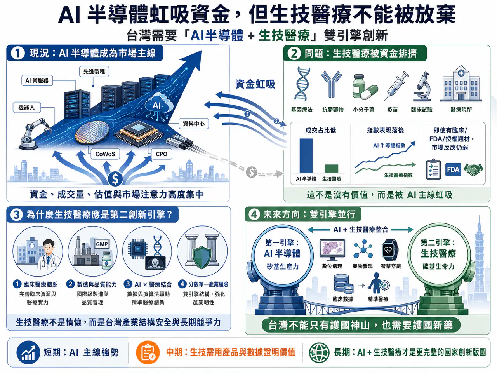
AI半導體掩蓋生技光芒
【🏔️ 台灣資金被 AI 半導體虹吸，但生技醫療不能被放棄】台灣資本市場最近出現一個非 常清楚的現象：AI 半導體正在虹吸一切。台股的主旋律幾乎完全被 AI 伺服器、先進製程、CoWoS、CPO、散熱、
破紀錄 AI 製藥融資來了！Google 系公司一次募 21 億美元
Google 系 AI 製藥公司大型融資，真正要看的不是 AI 標籤，而是平台能否把模型轉成可臨床驗證與授權的藥物資產。
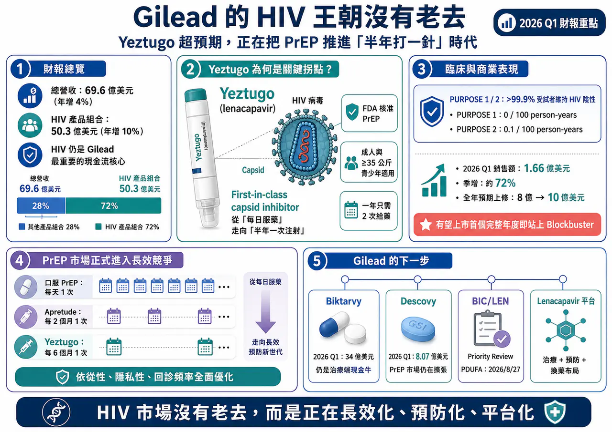
HIV 新藥很好賺呀...吉利德財報披露
【Gilead 的 HIV 王朝沒有老去：Yeztugo 超預期，正在把 PrEP 推進「半年打一針」時代】💉 Gilead 最新一季財報，表面看起來只是一份穩健的藥廠成績單。2026 年第一季，Gi
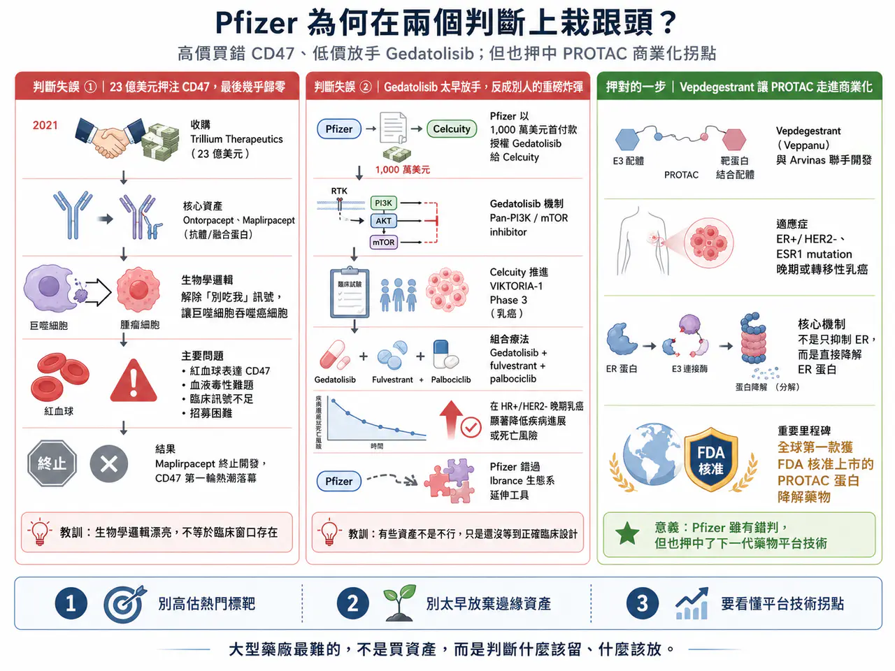
大藥廠 輝瑞在兩個判斷上栽跟頭？
【「賤賣」重磅炸彈，Pfizer 為何在兩個判斷上栽跟頭？】Pfizer 正站在一個很微妙的十字路口。一邊，是它與 Arvinas 聯手研發的 Vepdegestrant（Veppanu） 獲 FDA
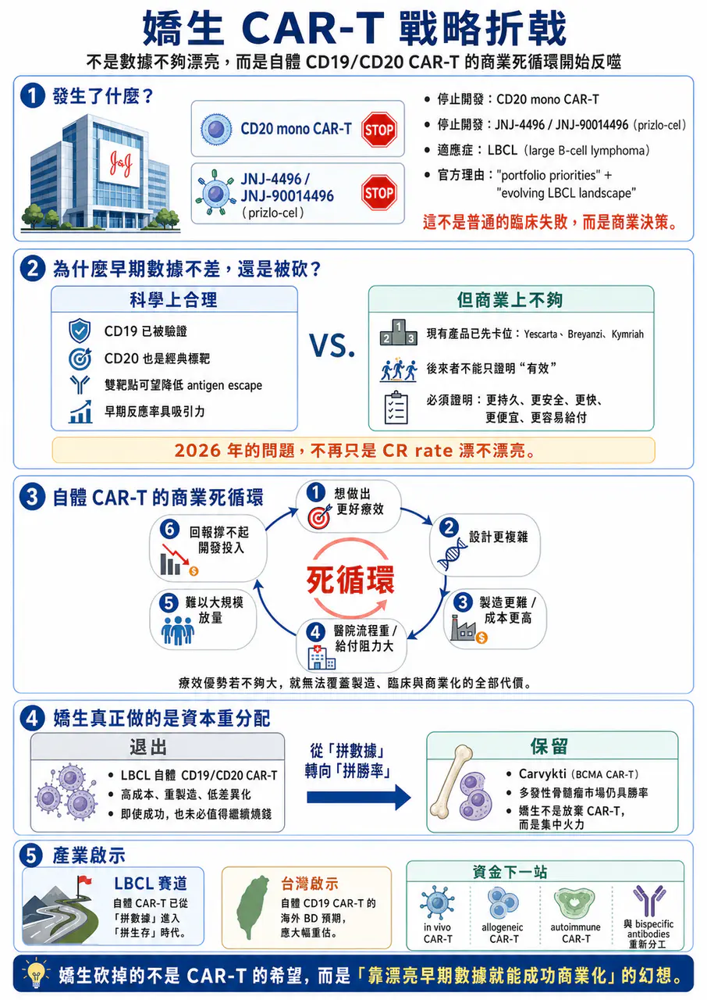
Johnson & Johnson（嬌生）砍掉兩條 自體淋巴瘤 CAR-T
【嬌生 CAR-T 戰略折戟：不是數據不夠漂亮，而是自體 CD19/CD20 CAR-T 的商業死循環開始反噬】📌 誰能想到，幾個月前還被 Johnson & Johnson 管理層高度看好的淋巴瘤
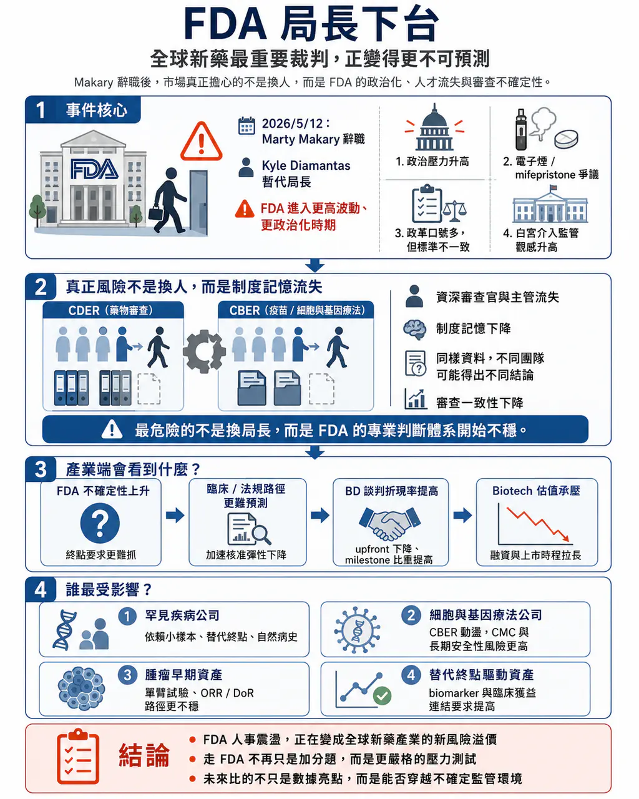
FDA 局長黯然離職：全球最重要的新藥裁判，正在變得更不可預測
【FDA局長下台：當全球新藥最重要的裁判，也開始變得不穩定】⚠️ 美國 FDA 又變天了。2026 年 5 月 12 日，美國 FDA 局長 Marty Makary 正式辭職，結束他僅約 13 個月的
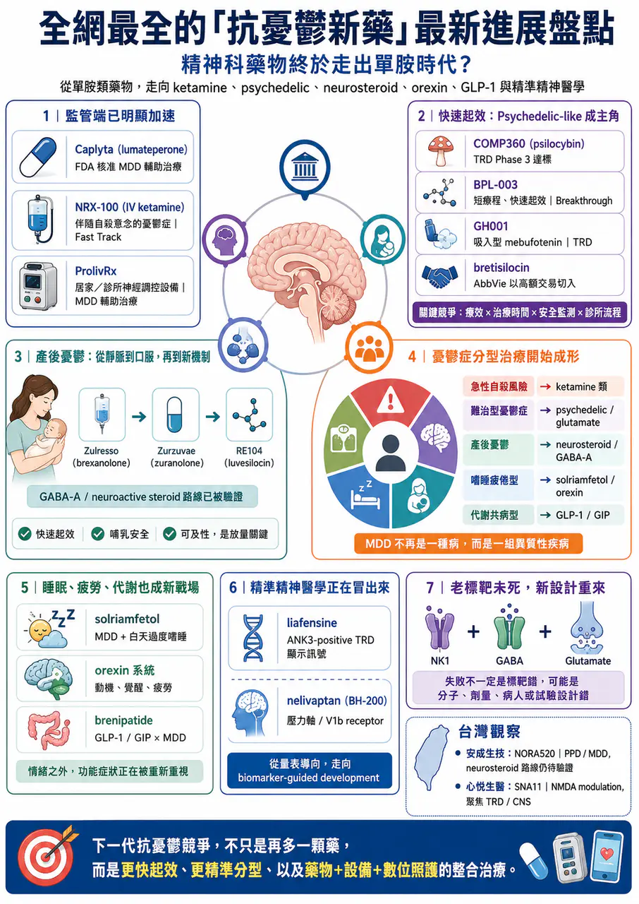
全網最全的「抗憂鬱新藥」最新進展盤點
【精神科藥物終於走出單胺時代？】📌 憂鬱症從來不是一個小市場。依 WHO 統計，全球約有 2.8 億人受到憂鬱症影響；若加上不同國家、不同診斷口徑下的未診斷與亞臨床族群，實際醫療負擔只會更高。這不是一

藥華藥 打開估值想像空間
【藥華藥不是只靠一個 PV 適應症：BESREMi 正在把「台灣新藥」推進 MPN 全球市場】💡 今天藥華藥（6446）漲停！，因為 BESREMi（ropeginterferon alfa-2b）在
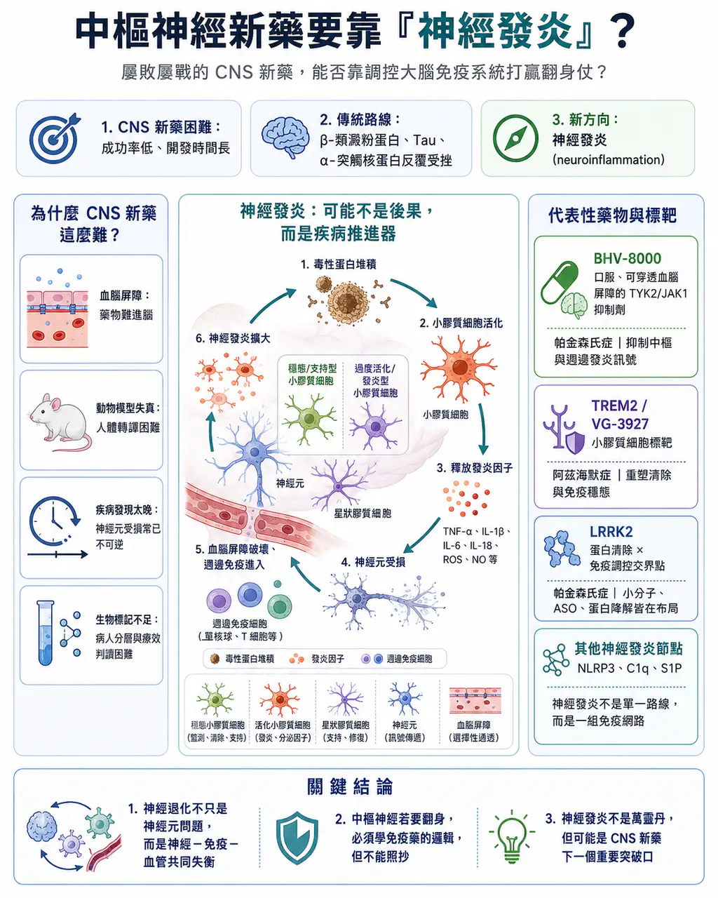
中樞神經新藥要靠「神經發炎」？
【屢敗屢戰的中樞神經新藥，能否靠「神經發炎」打贏翻身仗？】中樞神經系統新藥研發，一直是創新藥裡最難啃的一塊骨頭。🧠 不是市場不大。恰恰相反，阿茲海默症、帕金森氏症、肌萎縮性脊髓側索硬化症、多發性硬化症

自體免疫 雙子星 拯救 嬌生
【Johnson & Johnson 自免「雙子星」崛起：Stelara 退場後，Tremfya 與 Icotyde 正在重寫免疫版圖】📌 2026 年第一季，Johnson & Johnson（J&
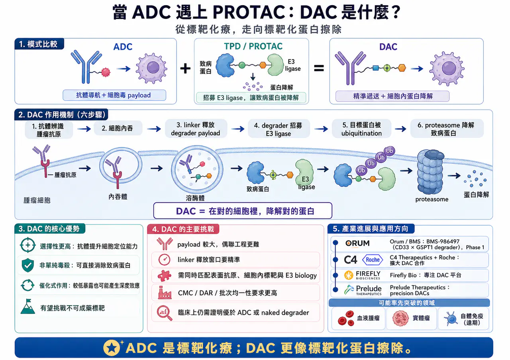
DAC（降解劑－抗體偶聯藥物）會是下一代標靶藥物的新引爆點嗎？
【強強聯手！當 ADC 遇上 PROTAC】生醫圈有兩個絕對頂流。📌 一個是 ADC（Antibody-Drug Conjugate，抗體藥物複合體）。📌 另一個是以 PROTAC（Proteolys
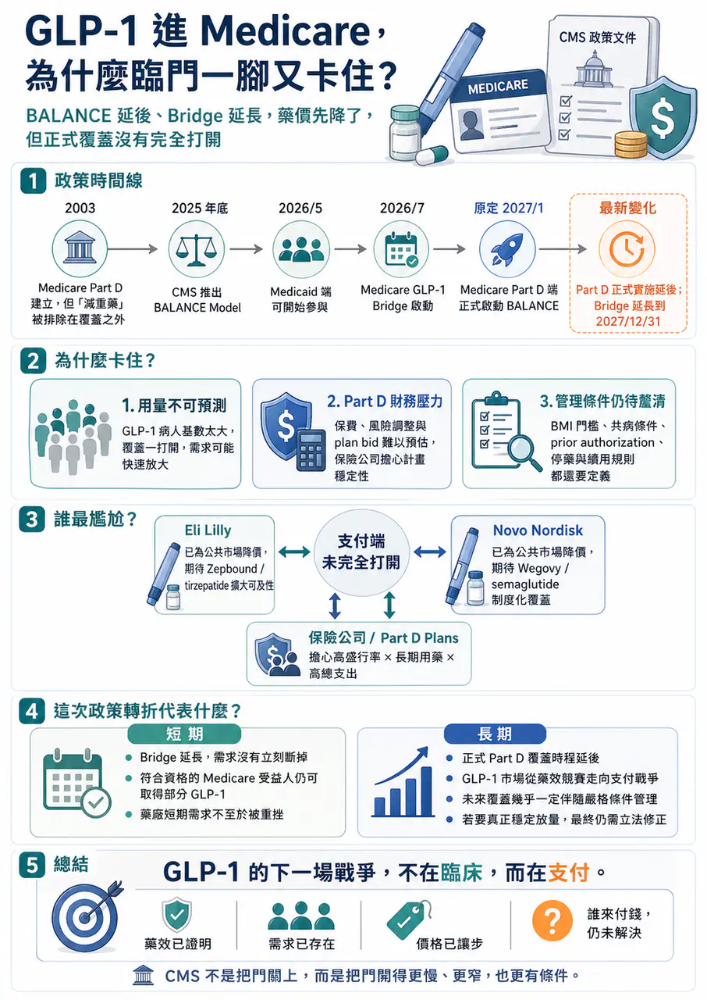
川普放政策鴿子，減肥藥價格白降了？
【川普政府放了 Eli Lilly（禮來）、Novo Nordisk （諾和諾德）的「鴿子」？GLP-1 進 Medicare，為什麼臨門一腳又卡住了】📌 2026 年 4 月下旬，美國減重藥市場出現
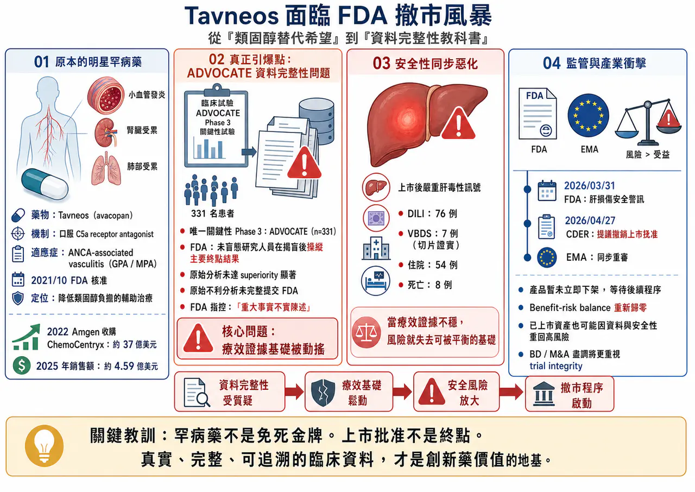
臨床試驗作假，FDA 撤市風暴！
FDA 對 Tavneos 提出撤市程序，核心不是單純療效不足，而是 ADVOCATE 試驗資料完整性與事後重判問題。
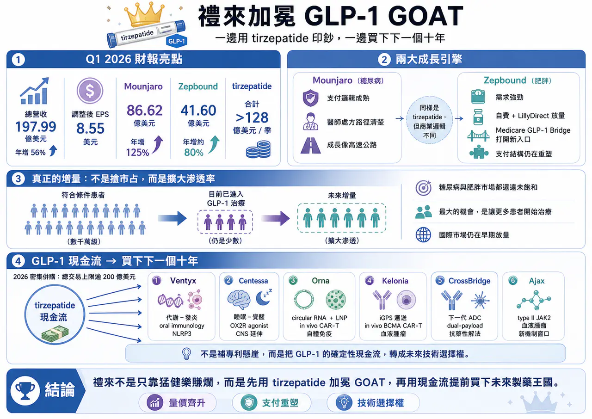
減肥藥還是太強了，禮來 猛健樂 賺爛！
【禮來加冕 GLP-1 GOAT：一邊用 tirzepatide 印鈔，一邊用 210 億美元買下下一個十年】📌 古神睜眼了。2026 年第一季，Eli Lilly 交出了一份讓整個製藥業都很難忽視的
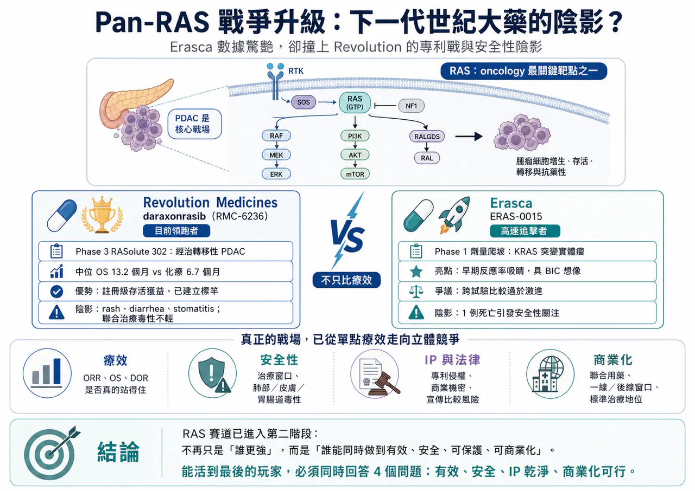
下一代世紀大藥的陰影？
【Pan-RAS 戰爭升級：Erasca 數據驚艷，卻撞上 Revolution 的專利戰與安全性陰影】📌 RAS 賽道，正在從「誰的療效更強」進入「誰能同時守住安全性、IP 與商業化窗口」的新階段。

【限時免費－台北場】藥時事｜捕捉生技飆股：用NPV框架算出翻倍重估點
✨講座介紹，生技醫藥股往往囊括了市場單日最大漲幅與最大跌幅，是極具爆發力的投資領域。然而，多數人將其視為妖股，是因為缺乏一套系統性的估值體系來了解其內在價值。藥時事 作為擁有超過 35，000 名生醫
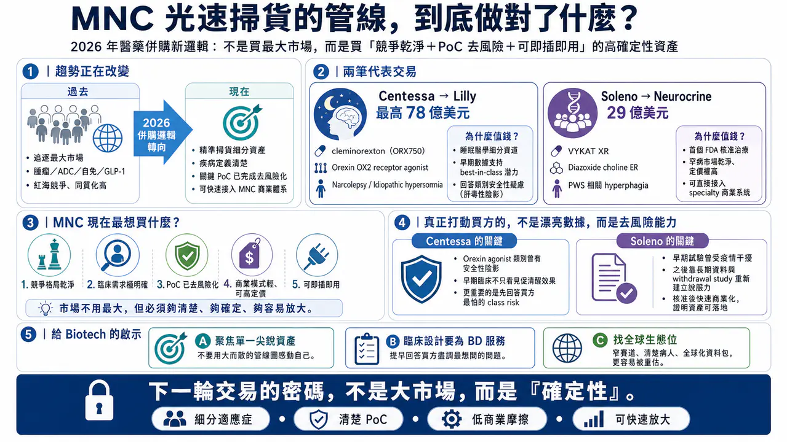
讓大藥廠心動的管線到底做了什麼？
📌 醫藥產業的併購邏輯，正在發生一場非常明顯的結構性變化。過去幾年，許多 Biotech 都想往最大、最熱門、最容易被資本市場理解的賽道擠：腫瘤、ADC、自體免疫、GLP-1、雙抗、細胞治療。這些方向
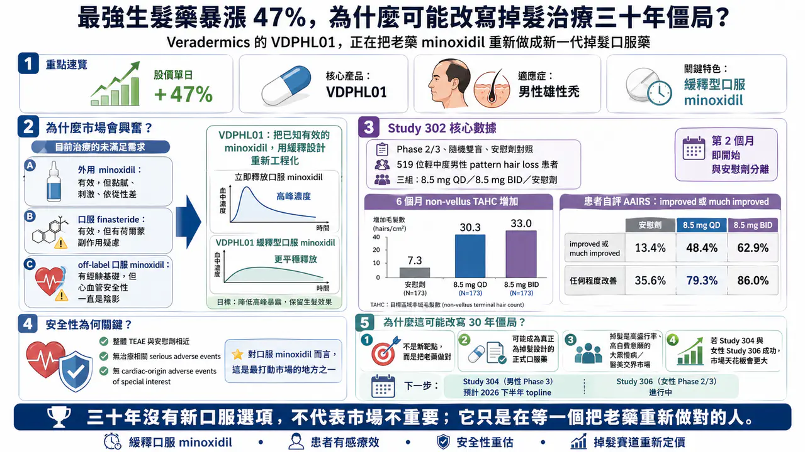
最強生髮藥暴漲 47%， 為什麼可能改寫掉髮治療三十年僵局？
Veradermics 的緩釋型口服 minoxidil 讀出正向臨床資料，讓掉髮治療從醫師經驗用藥走向正式新藥開發與市場重估。
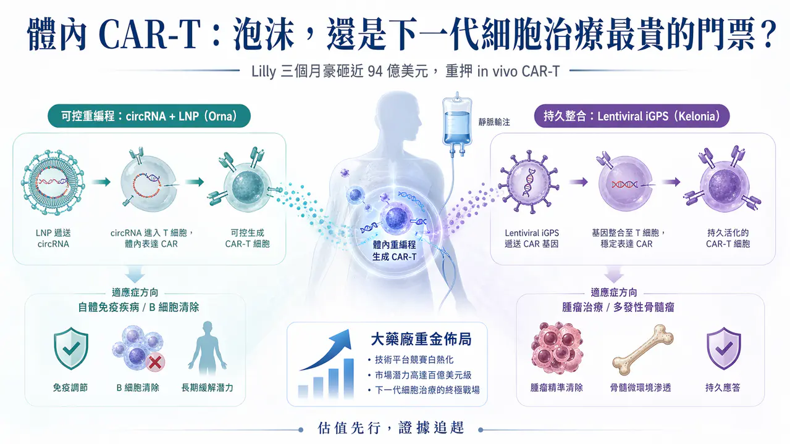
體內 CAR-T 的泡沫，還是下一代細胞治療最貴的門票？
📌 4 月 20 日，Eli Lilly 宣布將以最高 70 億美元收購臨床階段生技公司 Kelonia Therapeutics，其中包含 32.5 億美元現金預付款，其餘則取決於後續臨床、監管與商
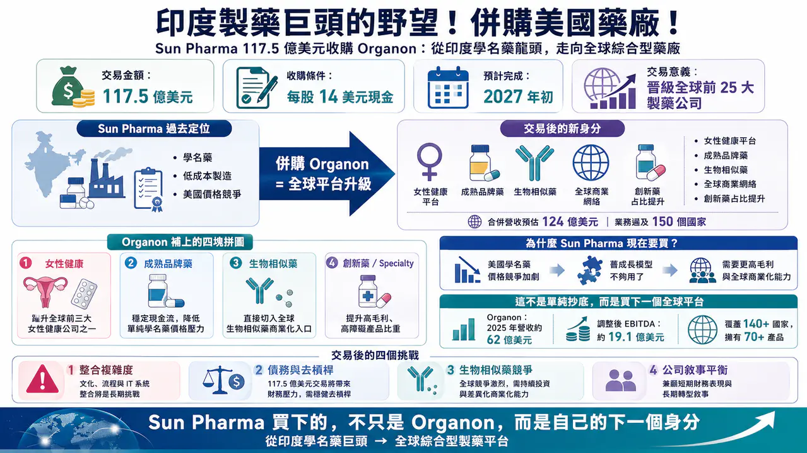
印度製藥巨頭的野望！併購美國藥廠！
【Sun Pharma 117.5 億美元收購 Organon：印度學名藥巨頭「抄底」百年女性健康平台，全球藥廠版圖正在重新排位】📌 4 月 26 日，印度最大製藥公司 Sun Pharmaceuti
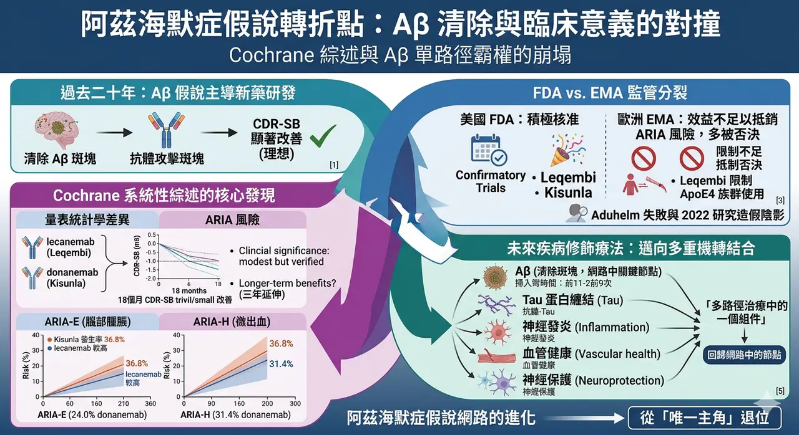
阿茲海默症20年來的假說開始崩盤？
【阿茲海默症的 Aβ 信仰，真的開始崩了嗎？】📌 4 月 16 日，一篇來自 Cochrane 的系統性綜述，再次把阿茲海默症領域最核心、也最具爭議的主軸，推回風暴中心。這份綜述的訊息極其刺耳：對輕度
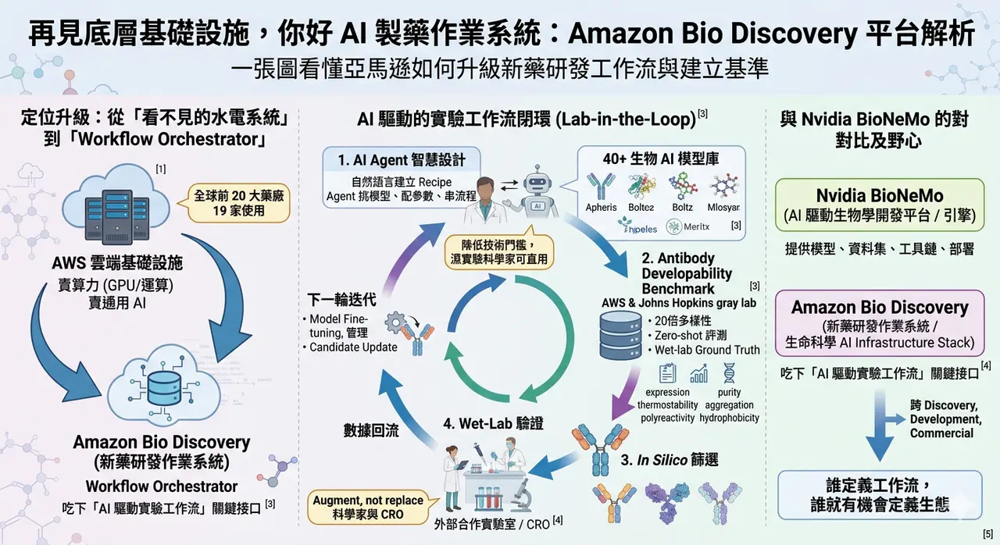
亞馬遜（Amazon） 參戰 AI 製藥，挑戰輝達（Nvidia）
過去幾年，科技巨頭切入生命科學，大多還停留在兩個角色：一種是賣算力，另一種是賣通用 AI。真正難的，是再往前跨一步，直接碰觸藥物發現這個最核心、也最挑剔的環節。因為這不只是把模型丟給研究員用而已，而是要同時解決模型選擇、資料標準、實驗流程、濕實驗驗證、結果回流與團隊協作這一整串問

一篇文章講通現在的“禮來”併購邏輯
💡 四個月，五筆交易，若把交易上限全部加總，Eli Lilly 在 2026 年前四個月已經丟出超過 187 億美元的併購火力：1 月的 Ventyx Biosciences、2 月的 Orna Therapeutics、3 月的 Centessa Pharmaceutical
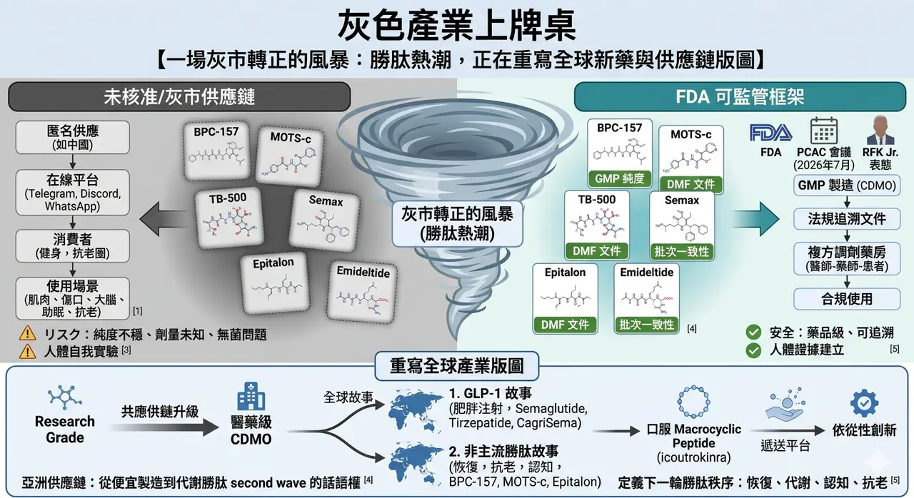
灰色產業上牌桌
🌪️ 在一處私人莊園裡，矽谷創業者、生技極客與華爾街資金坐在同一張桌上，話題從 AI、加密貨幣一路滑向更隱密的領域：BPC-157、MOTS-c、TB-500、Semax、Epitalon。這些名字不像藥，更像暗號。它們長期遊走在「研究用」與「人體使用」之間，被健身圈、抗老圈、
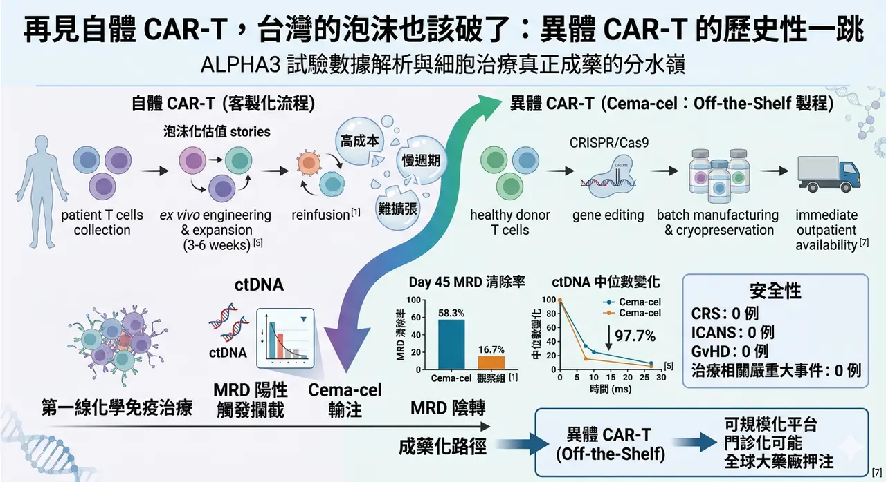
再見自體CAR-T，台灣的泡沫也該破了
當市場還在用過去十年對自體 CAR-T 的理解框架看細胞治療時，異體 CAR-T 其實已經悄悄走到一個更關鍵的節點。2026 年 4 月 13 日，Allogene Therapeutics 公布了 pivotal Phase 2 ALPHA3 試驗的中期無效性分析：在第一線鞏固
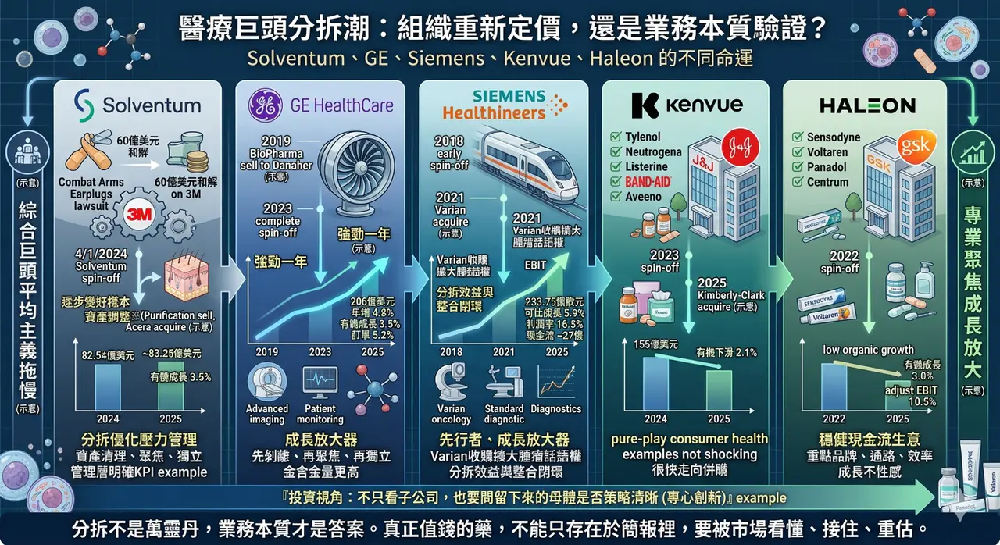
醫療巨頭分拆潮？
這幾年，全球大型企業在醫療產業做了一個很有意思、而且愈來愈頻繁的動作：把原本放在大集團裡的醫療業務拆出來，讓它獨立上市、獨立融資、獨立做決策。

平台型 Biotech 的授權收入是同業的 5 倍？
如果把 Biotech 的商業模式拆開來看，最容易被低估、但其實最值錢的一種公司，往往不是手上只有一顆明星分子的資產型公司，而是那些擁有底層技術引擎的平台型公司。這不是一句抽象口號，而是已有回顧分析支持的現象：一項針對 220 家公司、追蹤 10 至 15 年發展軌跡的回顧指出，
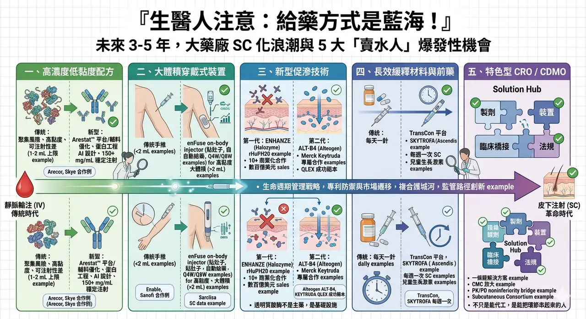
投資人請注意，給藥方式是藍海！
這幾年，如果你把跨國藥廠的動作連起來看，會發現一個非常一致、幾乎帶著戰略共識的方向：把原本靠靜脈輸注（IV）的重磅生物藥，盡可能改造成皮下注射（SC）版本。

慢性阻塞性肺病患者又有新藥可以用了？
2025 年，對 IL-33/ST2 這條曾被寄予厚望的發炎路徑而言，幾乎是一整年的信心潰散。
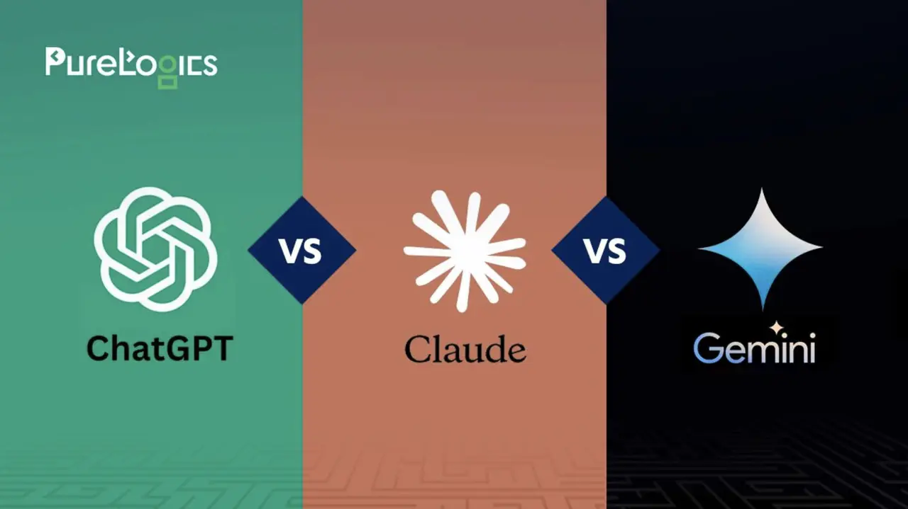
AI三巨頭在醫藥裡廝殺
ChatGPT、Claude、Gemini 這三大通用大模型，現在打的已經不只是消費端流量，也不是一般企業辦公市場，而是開始往生醫製藥產業鏈的深水區插旗。真正值得注意的，不是哪一家又多發了一個模型版本，而是它們切入醫藥行業的方式其實完全不同：有的先吃下長文本與監管文書，有的直接往
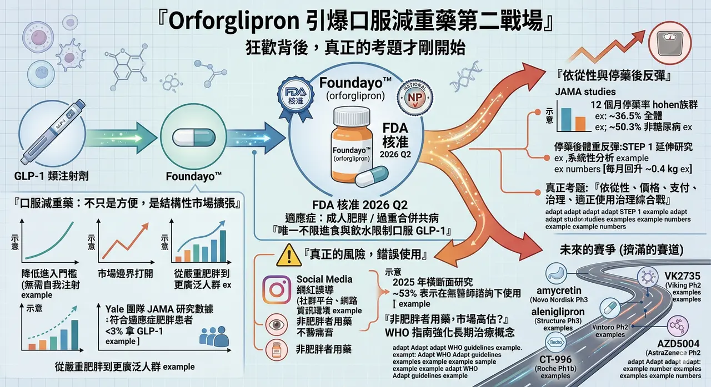
禮來口服藥引爆市場？
2026 年 4 月，Eli Lilly 的 Foundayo（orforglipron） 獲 FDA 核准，用於成人肥胖，或合併體重相關共病的過重族群。這不只是另一顆減重藥上市，而是一個足以改寫產業節奏的事件：它是美國最新一輪快速審查機制下核准的新分子實體，也是目前唯一獲准用於
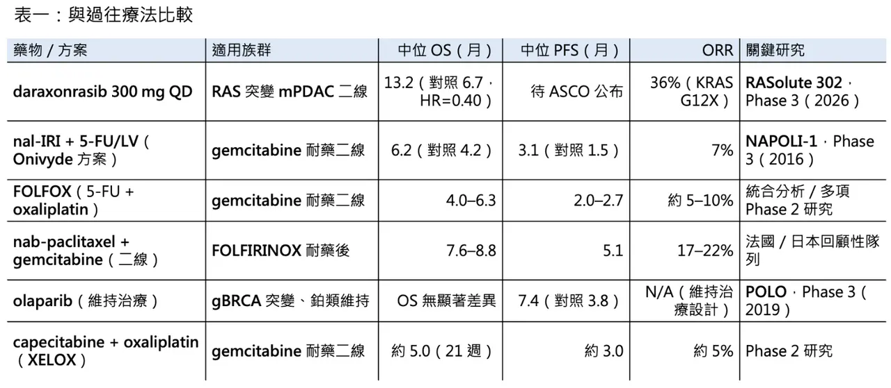
歷史性一刻，世紀大藥來了
4 月 13 日，Revolution Medicines 公布 daraxonrasib（RMC-6236） 在三期臨床 RASolute 302 的頂線結果。對於既往接受過治療的轉移性胰臟導管腺癌（metastatic PDAC）患者，這顆口服藥把整體意向治療族群的中位總生存
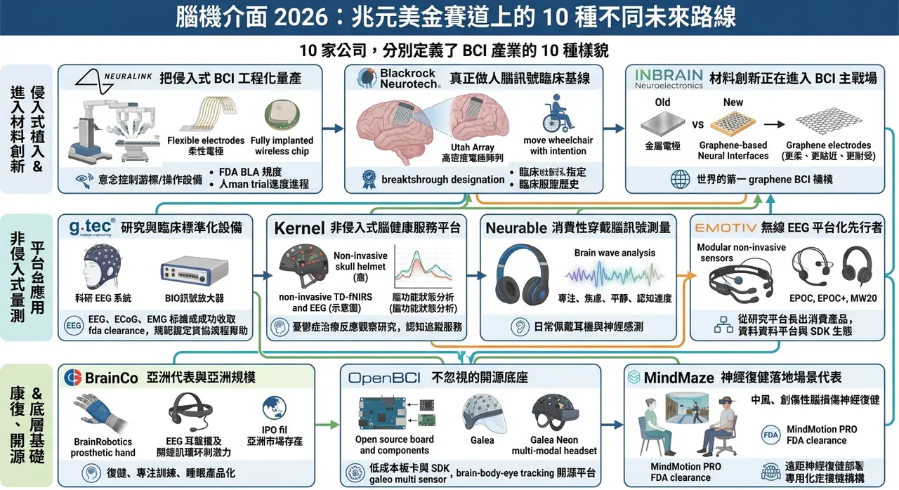
馬斯克的下一個兆元美金賽道 Neuralink，你必須知道的腦機介面 10 家！
到了 2026 年，腦機介面（brain-computer interface, BCI）已經不再只是科幻敘事或實驗室展示，而是逐漸分化成幾條很清楚的產業路線：一條走侵入式植入，目標是讓癱瘓患者重新溝通、操作設備甚至恢復部分功能；一條走非侵入式穿戴，強調腦訊號量測、認知監測與日常
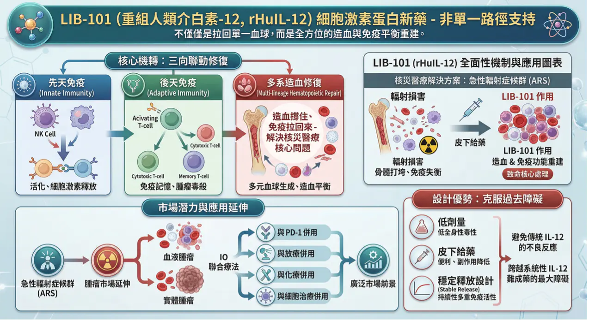
台灣這家Biotech將吃下AI基礎建設的所有紅利？
AI 吃電，核電回來了：為什麼麗寶新藥，可能站在下一個被重估的位置？
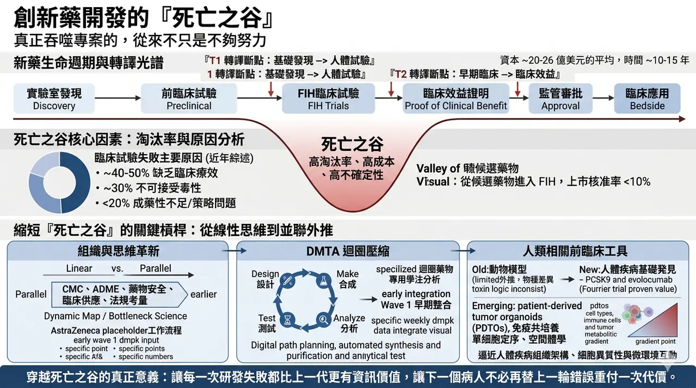
創新藥開發的「死亡之谷」
創新藥研發最殘酷的地方，不在於它難，而在於你往往在一開始就知道，它極可能失敗，卻還是必須投入多年時間、巨額資本，以及一整個團隊的職業生涯去把它往前推。
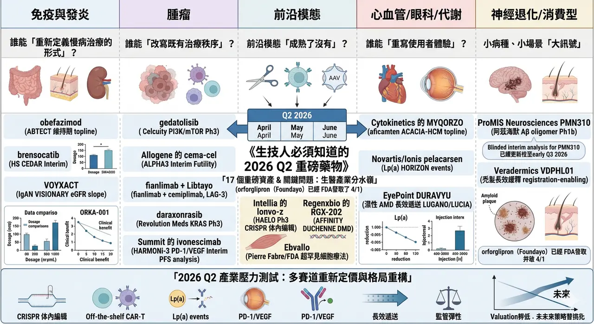
生技人必須知道的 2026 Q2 重磅藥物
2026 年第二季，全球生技醫藥產業正走進一個少見的高密度催化期。若把臨床讀數、監管決策與關鍵會議節點一起看，從 4 月到 6 月前後，至少有 17 個值得緊盯的重磅資產將陸續揭曉方向；更早一步，Eli Lilly 的口服減重藥 orforglipron（Foundayo） 已在

兩家明星 Biotech 的隕落
2025 年的生技產業，表面上看起來不像 2022 年那麼驚慌，但真正懂產業的人都知道，市場其實正在經歷一場更深層的重估。依 Fierce Biotech 年底的 graveyard 清單，2025 年美國共有 16 家 Biotech 正式關門，另有 3 家已一腳踏進墳場；雖然
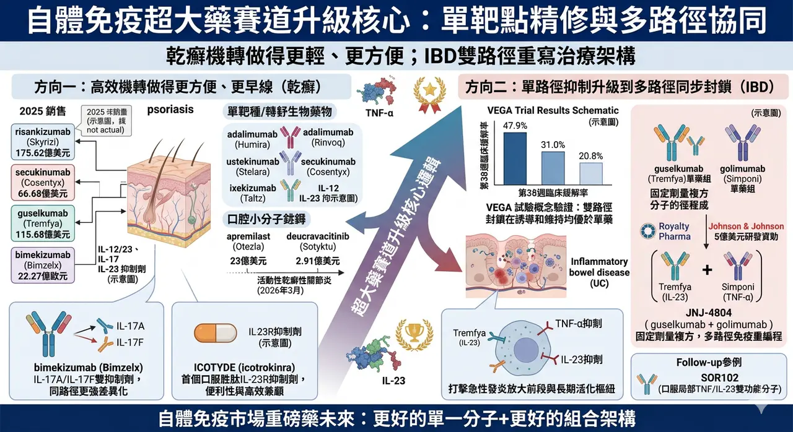
投資人請注意，自體免疫超大藥賽道
自體免疫藥物市場，從來都不是「穩定但無聊」的成熟市場。恰恰相反，它一直是全球最容易長出重磅藥物的沃土之一，而乾癬（psoriasis），正是這條價值鏈裡最具代表性的試驗場。光看 2025 年幾個關鍵產品的銷售表現，就足以感受到這條賽道的厚度：risankizumab（Skyriz
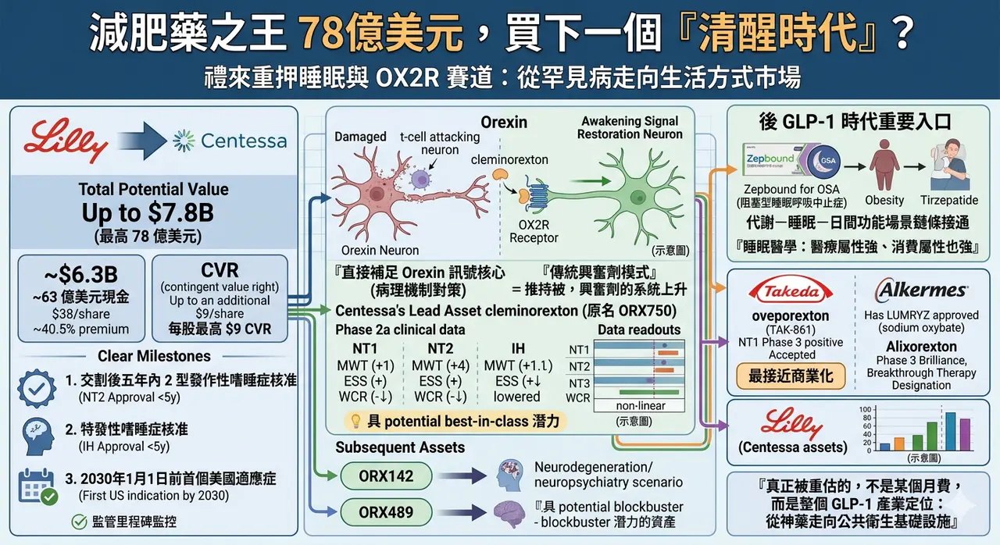
減肥藥之王 78億美元，買下一個「清醒時代」？
當 Eli Lilly（禮來） 以最高 78 億美元 收購 Centessa Pharmaceuticals，這筆交易表面上看，是大藥廠再一次用高溢價把一條中期臨床資產收入囊中；但若把時間線再拉長一點，它其實更像是一場很有方向感的提前卡位。因為 Lilly 買下的不只是 clem
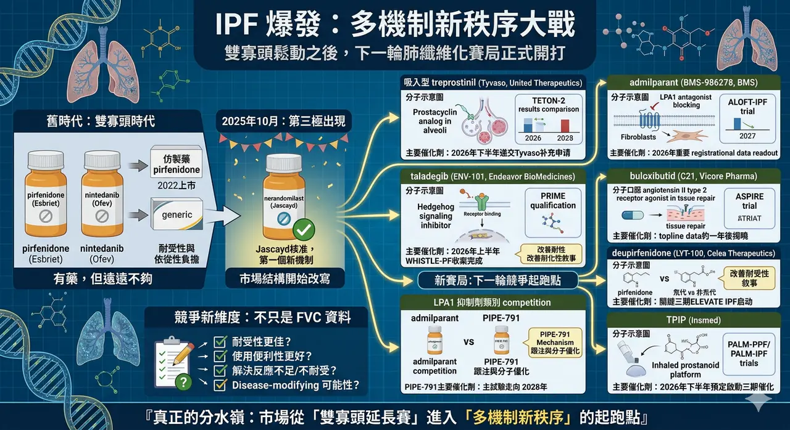
特發性肺纖維化 迎來爆發
特發性肺纖維化，idiopathic pulmonary fibrosis（IPF），從來都不是一個容易講出樂觀故事的領域。這是一種慢性、進行性、不可逆的纖維化肺病，預後差、死亡風險高，過去長年幾乎等同於「只能拖慢，不能扭轉」。現行治療雖然已有 nintedanib（Ofev）
這家公司臨床試驗失敗，反而被更加看好？
甲狀腺相關眼疾（thyroid eye disease, TED）這條賽道，最近又迎來一次很典型、也很殘酷的產業教育。2026 年 4 月 2 日，Immunovant 宣布其第一代 FcRn 抑制劑 batoclimab（IMVT-1401） 在兩項 TED 的 III 期試驗

何時果斷放棄新藥臨床試驗開發？
新藥開發最難的，往往不是立項那一天，而是明明已經看見風險，卻仍不願按下停止鍵的那一天。每一個研發專案開始時，幾乎都帶著同樣的想像：要做到 first-in-class、要走到 pivotal study、要送件、要上市、要成為下一個成長引擎。然而現實比願景殘酷得多。新藥研發通常要
這一批罕見病患者終於等來新藥！
美國 FDA 近日加速核准 Denali Therapeutics 的 AVLAYAH（tividenofusp alfa-eknm），用於治療 Hunter syndrome （韓特氏症），也就是 mucopolysaccharidosis type II（MPS II） 的神

歐洲生技公司Abivax 一年暴漲14倍的神話
Abivax 近幾個月的股價與話題熱度，幾乎都圍繞著同一件事打轉：它到底會不會成為下一個大型藥廠出手收購的標的。
當美國 CDC 還在找主任...
真正值得擔心的，從來不只是美國疾病管制與預防中心（CDC）這個位子到底由誰來坐，而是當一個國家的公共衛生指揮中樞長期處於權責模糊、科學威信受損、政策方向反覆擺盪的狀態時，它原本在全球健康治理與醫藥監管上的領導角色，也會跟著一起鬆動。2026 年 3 月 25 日，白宮錯過了為 C
骨折價 瘦瘦針來了，每月420塊台幣
2026 年 3 月，semaglutide （瘦瘦針）在印度迎來一個足以寫進產業教科書的時刻。隨著 Novo Nordisk 在印度的核心專利到期，這個過去幾年幾乎重新定義全球減重與代謝治療想像的分子，第一次在一個具備龐大人口基數、成熟學名藥工業與高度自費特性的超大型市場，正式
我們離真正的抗老藥，究竟還有多遠？
「抗老化」這三個字，很容易讓人聯想到不老神話、富人專屬科技，甚至公平性與可近性的爭議。
瘦瘦針翻車？導致胰臟炎？
GLP-1 類藥物近兩年幾乎成了全球醫療市場最耀眼的明星。從 liraglutide（利拉魯肽）、semaglutide（司美格魯肽），到雙重受體機制的 tirzepatide（替爾泊肽），這一波藥物不只改變了第二型糖尿病治療，也快速跨入體重管理、心血管風險降低等更大的市場。也正
瘦瘦針、猛健樂之後，減肥藥研發正在發生什麼事？
過去幾年，**司美格魯肽（semaglutide）與替爾泊肽（tirzepatide）**幾乎重寫了肥胖治療的市場想像。它們不只把減重從「意志力問題」拉回醫療管理，更把投資人、藥廠與臨床醫師對減重藥的預期，直接拉高到一個全新標準。
默沙東還能再造一個腫瘤帝國嗎？
2026 年才過了不到三個月，默沙東已經用兩個動作，把自己對「後 Keytruda 時代」的答案講得愈來愈清楚。
信達的全球化列車，台灣的圓祥搭上了？
3 月 24 日，信達生物公布 efdamrofusp alfa（IBI302） 在中國新生血管型老年黃斑部病變（nAMD）關鍵三期 STAR 試驗達成 52 週主要終點。乍看之下，這像是一則典型的臨床里程碑新聞；但若把它放回全球眼科產業的競爭結構裡看，這件事的重要性遠不只是一款
台灣生技估值第一步：不要把所有公司都塞進同一個本益比
台灣生技股最常見的錯誤，不是模型算錯一點，而是公司類型一開始就分錯。
第一三共最貴的一課：ADC 爆款之後，產能豪賭如何反噬？
第一三共因 ADC 供應鏈與產能承諾認列高額費用，提醒新藥公司與 CDMO：pipeline 要折現，產能也要折現。

生技公司估值模型如何計算
方格子同步收錄藥時事 YouTube 影片入口，介紹生技公司估值模型如何計算，適合想建立 rNPV、SOTP 與管線估值基礎的讀者。
為什麼生技新聞不能只看成功或失敗？真正該問的是 5 個估值參數
生技新聞不能只分利多利空。真正要問的是：成功率、上市時間、患者池、峰值銷售、風險折現，哪個估值參數真的被改變了。
公司簡報不能只抄重點：真正要聽的是公司沒說清楚什麼
聽生技公司簡報時，重點不是把公司想說的故事抄下來，而是判斷哪些假設、風險與估值參數還沒有被說清楚。
OX2R 爆紅：從發作性嗜睡症，到下一代 CNS 藥物想像空間
OX2R 爆紅：從發作性嗜睡症，到下一代 CNS 藥物想像空間 中樞神經系統藥物開發，很久沒有出現一個這麼清楚、這麼有生物學邏輯、又這麼接近臨床突破的靶點。 這個靶點就是 Orexin Receptor 2（OX2R）。 如果只用一句話解釋 OX2R 的重要性，它不是單純讓人「比較不想睡
減重藥物不只看體重了：下一代療法正在瞄準這些方向
減重藥物不只看體重了：下一代療法正在瞄準這些方向 肥胖治療正在成為全球創新藥研發中最重要的戰場之一。 過去，市場討論減重藥物，焦點多半放在一件事：能瘦多少？ 但現在，這個問題已經不夠用了。隨著 Wegovy（semaglutide）、Ozempic（semaglutide）、Mou
藥時事會員版：不是更多新聞，是一套生技醫藥判斷系統
這篇是藥時事會員版的產品介紹。 如果你是從 FB、爆料同學會或朋友轉貼進來，先講清楚： 藥時事會員版不是明牌。 也不是每日醫藥新聞摘要。 我想做的是一套給台灣讀者看的生技醫藥基本面判斷系統。 為什麼需要這個會員版 生技醫藥新聞很多。 但真正困難的不是知道發生了什麼，而是判斷： 這
氣喘新藥正在換檔：從吸入三合一到上游免疫靶點
氣喘是全球最常見的慢性呼吸道疾病之一，也是醫學上仍難以「根治」的疾病。WHO 估計，2019 年全球約有 2.62 億名氣喘患者，並造成約 45.5 萬人死亡；若採用較早期的全球估算，患者人數甚至可達 3.39 億。這不只是過敏體質或空氣品質的生活議題，也是一條正在被國際大藥廠重新定義的創新藥賽道。
全球生技大浪來襲：看懂五兆減肥藥的主升段與科學定價
當台灣資本市場的資金與目光被 AI 半導體全面虹吸時，全球生技產業正悄悄用另一種方式重新定義人類的未來——那就是減肥藥的瘋狂狂潮。 我們多次提到，AI 解決的是算力與效率問題，而生技醫療解決的是疾病與生命問題。這不是一場資源的對立，而是台灣必須並行的雙引擎。如果說 AI 半導體是矽基生產力的極致，
這些中型 Biotech，正在把「重磅炸彈藥物」從夢想變成現金流
在很長一段時間裡，製藥業的 blockbuster drug，似乎是大型藥廠的專屬勳章。 年銷售額突破 10 億美元，代表的不只是產品好賣，而是公司必須同時具備臨床開發能力、法規溝通能力、保險給付能力、醫師教育能力、銷售組織能力，以及後續適應症擴張能力。 這些資源過去多半掌握在大型跨國藥廠手中。
Johnson & Johnson（嬌生）砍掉兩條 自體淋巴瘤 CAR-T
嬌生 CAR-T 戰略折戟：不是數據不夠漂亮，而是自體 CD19/CD20 CAR-T 的商業死循環開始反噬 誰能想到，幾個月前還被 Johnson & Johnson 管理層高度看好的淋巴瘤 CAR-T 管線，會在 2026 年 4 月底被突然送進歷史檔案夾。 這不是普通的管線微調。
大藥廠 輝瑞在兩個判斷上栽跟頭？
「賤賣」重磅炸彈，Pfizer 為何在兩個判斷上栽跟頭？ Pfizer 正站在一個很微妙的十字路口。 一邊，是它與 Arvinas 聯手研發的 Vepdegestrant（Veppanu） 獲 FDA 核准，用於治療 ER+/HER2-、帶有 ESR1 mutation 的晚期或轉移性乳癌。
【限時免費－台北場】藥時事｜捕捉生技飆股：用NPV框架算出翻倍重估點
生技醫藥股往往囊括了市場單日最大漲幅與最大跌幅，是極具爆發力的投資領域。 然而，多數人將其視為妖股，是因為缺乏一套系統性的估值體系來了解其內在價值。 藥時事 作為擁有超過 35,000 名生醫菁英（包含醫師、科學家與專業投資人）關注的平台，將帶領你建立專業的投資判讀框架。 建立你的生醫投資「去
下一代世紀大藥的陰影？
Pan-RAS 戰爭升級：Erasca 數據驚艷，卻撞上 Revolution 的專利戰與安全性陰影 RAS 賽道，正在從「誰的療效更強」進入「誰能同時守住安全性、IP 與商業化窗口」的新階段。 過去幾十年，RAS 一直被視為 oncology 裡最難攻克、也最有價值的聖杯之一。尤其在
阿茲海默症20年來的假說開始崩盤？
4 月 16 日，一篇來自 Cochrane 的系統性綜述，再次把阿茲海默症領域最核心、也最具爭議的主軸，推回風暴中心。這份綜述的訊息極其刺耳：對輕度認知障礙（MCI）或輕度失智的阿茲海默症患者而言，amyloid-beta targeting monoclonal antibodies 在 18